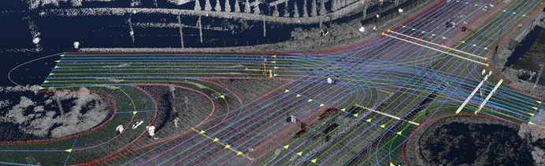

High Definition Digital Mapping
Road is the most significant element of a map.
Most existing maps present a road network where users can identify each road by name and learn how a road is connecting with other roads.
Furthermore, those maps can provide Extra information about the road, including the length, the geometry shape, the number of lanes, and the geographic coordinates of road landmarks.
But these Extra attributes are usually used as independent references/corrections of the maps, and not encoded into the road network. It means that these maps topologically present a road network, without considering further details. For instance, the subway map in Figure 1 and the Google map in Figure 2 present the connection topology of the roads but do not provide more details of the roads themselves.
|  |  |
|:---------------------------------------------------------------------:|:-------------------------------------------------------------:|
| Figure 1. A snapshot of chicago subway map. | Figure 2. A snapshot of Google map. |
However, a high definition map is required to present a road network that contains all available details. It means that a road in HD map is not represented by a single line any more, but by a set of parallel lane markings in Figure 3.
---
</img>
Figure 3. An example snapshot of high definition map, where each lane of a road is clearly presented including its geographical position and driving direction.
With the help of GPS localization and Map match algorithm, the topological road network is able to support assistive navigation, helping human drivers plan the best route from departure to arrival.
However, for the self driving car, a topological route is not enough. It requires a high definition map to know much more details of the road it is driving through. For example, the lane markings with geo-coordinates in HD map can help self-driving car stay in its lane, and the road boundaries encoded with geo-coordinates and boundary types guarrantee the safety of self-driving cars.